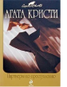

"Сладкая парочка" сыщиков - Томми и Таппенс Бересфорд - снова в деле. Им предстоит масса веселых и захватывающих приключений. К тому же каждая глава этого ироничного детектива представляет собой пародию на рассказы о самых популярных литературных сыщиках в истории мирового детектива ("Партнеры по преступлению"), Томми и Таппенс опять оказываются замешаны в историю со шпионами. На этот раз действие происходит во время Второй мировой войны. Сильно повзрослевшим детективам предстоит разоблачить немецкую разведывательную сеть, испытав при этом массу невероятных приключений ("Икс или игрек?").